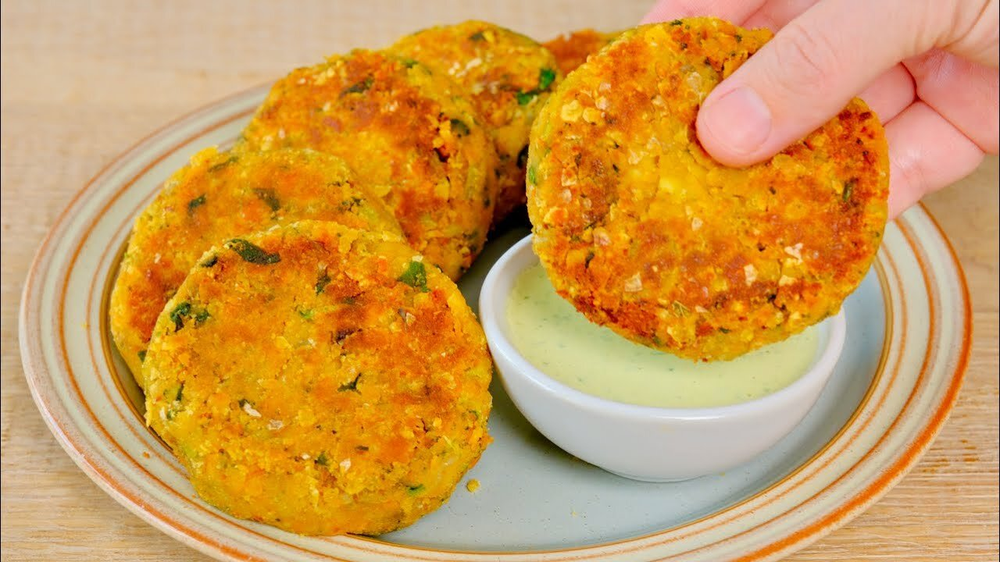

приготовление:
-
Замочить 285 г красной чечевицы в воде на 2 часа, затем хорошо слить воду.
-
Очистить и крупно нарезать 2 луковицы шалота и 2 моркови.
-
Переложить чечевицу и подготовленные овощи в кухонный комбайн. Добавить 2 зубчика чеснока, пучок петрушки и/или кориандра, 1–2 ст. л. томатной пасты, 1 ч. л. соли и 0,5 ч. л. чёрного перца. Измельчить до пластичной массы.
-
Сформировать фриттерс. Обжаривать на среднем огне с небольшим количеством растительного масла примерно по 5 минут с каждой стороны до румяной корочки.
-
Подавать с хумусом или сметаной.